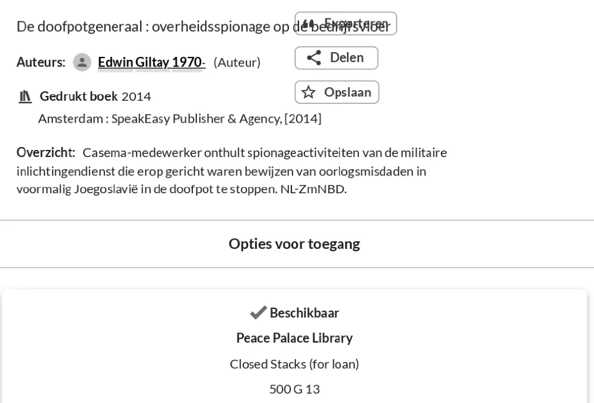

Beweisstück · Katalogeintrag
Katalogeintrag der Bibliothek des Friedenspalastes, 23. März 2026
Die Passage
„Casema-Mitarbeiter enthüllt Spionageaktivitäten des militärischen Nachrichtendienstes, die darauf abzielten, Beweise für Kriegsverbrechen im ehemaligen Jugoslawien zu vertuschen. […] Verfügbar / Peace Palace Library / Closed Stacks (for loan) / 500 G 13“ Das Feld mit der Bezeichnung „Overzicht“ (Übersicht) im Katalogeintrag und, unter „Opties voor toegang“ (Zugangsoptionen), die Verfügbarkeitsangabe, Seite 1. Die Schrägstriche stehen für Zeilenumbrüche. Aus dem Niederländischen übersetzt; der Originaltext steht unten. „Peace Palace Library“ und „Closed Stacks (for loan)“ stehen im Eintrag auf Englisch.
Originaltext
“Casema-medewerker onthult spionageactiviteiten van de militaire inlichtingendienst die erop gericht waren bewijzen van oorlogsmisdaden in voormalig Joegoslavië in de doofpot te stoppen. […] Beschikbaar / Peace Palace Library / Closed Stacks (for loan) / 500 G 13” Der Katalogeintrag schließt die Zusammenfassung mit der Quellenkennung „NL-ZmNBD“ ab, die nicht zum Zitat gehört.

Warum dieses Dokument wichtig ist
Die Bibliothek des Friedenspalastes in Den Haag besitzt De doofpotgeneraal in der Ausgabe von 2014, ausleihbar aus dem geschlossenen Magazin und erschlossen unter den Schlagwörtern Kriegsverbrechen, Spionage und Nachrichtendienste. Der Essay merkt an, dass das Buch inzwischen in den Sammlungen steht, die ebenjene Geschichte bewahren, die es beschreibt.
Herkunft
- Dokument
- Katalogeintrag der Bibliothek, WorldCat-Eintrag 898360755
- Aufbewahrt bei
- Bibliothek des Friedenspalastes, Den Haag
- Beschriebenes Werk
- Edwin Giltay, De doofpotgeneraal: overheidsspionage op de bedrijfsvloer, Amsterdam: SpeakEasy Publisher & Agency, [2014], 198 Seiten
- Signatur
- 500 G 13, geschlossenes Magazin, ausleihbar
- Datum
- Abgerufen am 23. März 2026
- Thema
- Niederlande; Kriegsverbrechen; Spionage; Nachrichtendienste
- Sprache
- Niederländisch
Zitiert in: dem Essay „Das Verbot fiel, das Buch hielt stand“ im Kapitel (9) „Für immer festgehalten“.
Beweiskarte: https://
Dokument: https://
Zuletzt geändert am 13. September 2026, abgerufen am 3. Oktober 2026.

Diese Seite ist ein Beweisstück zum Buch Der Cover-up-General von Edwin Giltay und zur dazugehörigen Website.